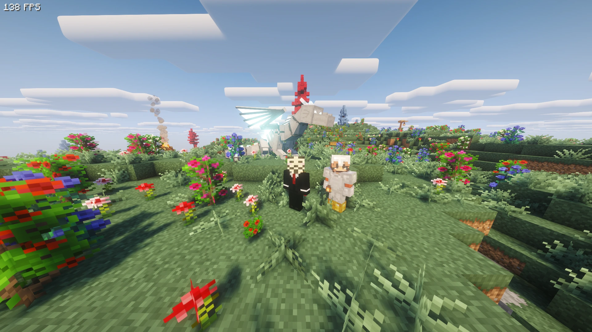

Privat · Projekt
Minecraft-Server (Better MC BMC5)
Eigener Ubuntu-Root-Server (oracle) mit systemd-Dienst und automatischem Backup-Skript.

Über das Projekt
Ein vollständig selbst gehosteter Minecraft-Server für eine Gruppe von Freunden, aufgesetzt von Grund auf, ohne fertiges Hosting-Panel. Ziel war es, einen modifizierten Server (Better MC BMC5 auf NeoForge 1.21.1) stabil und kostenlos zu betreiben und dabei die gesamte Infrastruktur selbst zu verstehen und zu kontrollieren.
Als Basis dient eine Always-Free-Instanz von Oracle Cloud auf ARM-Architektur (Ampere A1.Flex, aarch64)
unter Ubuntu. Die ARM-Plattform brachte eigene Herausforderungen mit sich, von der Auswahl kompatibler Mods
bis zur Performance-Optimierung auf nur zwei CPU-Kernen. Der Server läuft als systemd-Dienst,
startet also nach jedem Reboot automatisch und erholt sich selbstständig von Abstürzen. Ein zeitgesteuertes
Backup-Skript sichert die Welt täglich über einen Cron-Job in den Oracle Object Storage, unabhängig von der
Instanz selbst, sodass die Weltdaten auch bei einem Instanzverlust erhalten bleiben.
Vom Provisionieren der Infrastruktur über Firewall- und DNS-Konfiguration, Crash-Debugging anhand von Server-Logs bis hin zur Versionierung der Konfiguration mit Git wurde die komplette Pipeline eigenständig umgesetzt.
Highlights
- Kostenfreier Betrieb auf der Always-Free-Stufe von Oracle Cloud (ARM/aarch64, Ubuntu)
- Automatischer Start über einen
systemd-Dienst mit Neustart bei Absturz und nach Reboots - Tägliche Backups per Cron-Job in den Oracle Object Storage, getrennt vom Boot-Volume und unabhängig von der Instanz
- Dynamisches DNS via DuckDNS, das die wechselnde öffentliche IP automatisch nachführt
- Doppelte Firewall korrekt konfiguriert (Oracle Security List + iptables, persistent gespeichert)
- Crash-Troubleshooting auf einer experimentellen ARM-Plattform, inkompatible Mods anhand der Server-Logs identifiziert und gezielt entfernt
{kind=link}
{kind=link}
{kind=link}
{kind=link}
{kind=link}